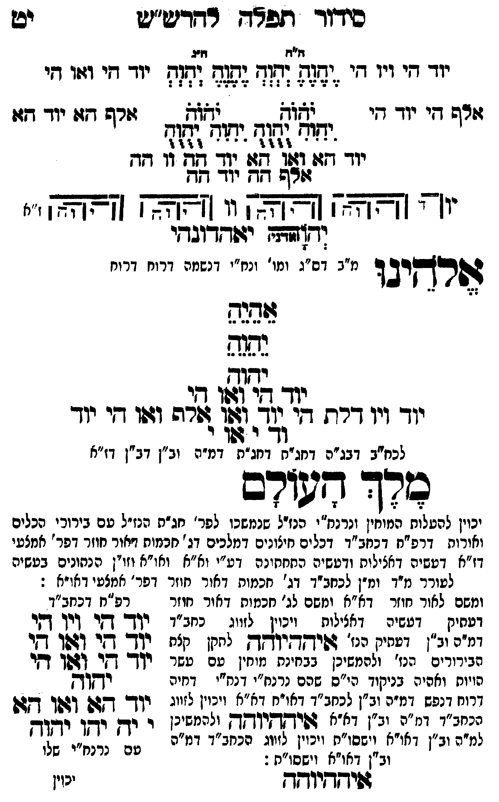

Neue Klartextfassung
=== טבלה === [טור ימין] יוד הי ויו הי אלף הי יוד הי [טור אמצעי] [ה"ח ה"ג] יֶהֶוֶהֶ יְהְוְהְ יֶהֶוֶהֶ יְהְוְהְ יֹהֹוֹהֹ יֹהֹוֹהֹ יִהִוִהִ יֻהֻוֻהֻ יִהִוִהִ יֻהֻוֻהֻ יוד הא ואו הא יוד הה וו הה אלף הה יוד הה [טור שמאל] יוד הי ואו הי אלף הא יוד הא === סוף טבלה === [תרשים: ארבעה צירופי יהוה בקווים אופקיים ואנכיים המחברים את האותיות. לצדי התרשים וי וי וי וי; ז"א.] יאהדונהי יהוה (אדני) אלהינו [מ"ב דס"ג ומי' ונח"י דנשמה דרוח דרוח] אֵהֵיֵהֵ יֵהֵוֵהֵ יהוה יוד הי ואו הי יוד ויו דלת הי יוד ואו אלף ואו הי יוד וד י או י [לכח"ב דבג"ה דחג"ת דחג"ת דמ"ה וב"ן דב"ן דז"א] מלך העולם [יכוין להעלות המוחין ונרנח"י הנז"ל שנמשכו לפר' חג"ת הנז"ל עם בירורי הכלים ואורות דרפ"ח דכחב"ד דכלים חיצונים דמלכים דג' חכמות דאור חוזר דפר' אמצעי דז"א דעשיה דכללות ורביעיה התחתונה דע"י וא"א ואו"א וזו"ן הנתונים בעשיה להעלותם עם יחידה דנפש לעורר מ"ד ומ"ן לכחב"ד דג' חכמות דאור חוזר דפר' אמצעי דאו"א:] [ומשם לאור חוזר דא"א ומשם לג' חכמות דאור חוזר דעתיק דעשיה דכללות ויכוין לזווג כחב"ד דמ"ה וב"ן דעתיק איההיוהה לתקן כלם הבירורים הנז' ולהמשיכן כבחינת מוחין עם עשר הויות וחלפי' בניקוד כ"ס שהם נרנח"י ורנח"י דיחידה דרוח דנפש דמ"ה וב"ן לכחב"ד דא"א ויכוין לזווג בכחב"ד דמ"ה וב"ן דא"א איההיוהה ולהמשיכן למ"ה וב"ן דאו"א וישסו"ת ויכוין לזווג הכחב"ד דמ"ה וב"ן דאו"א וישסו"ת:] === טבלה === [טור שמאל — רפ"ח דכחב"ד] יוד הי ויו הי יוד הי ואו הי יוד הי ואו הי יהוה יוד הא ואו הא [למ"ד לאבא] י יה יהו יהוה [למ"ן לאימא עם נרנח"י שלו] === סוף טבלה === איההיוהה
Original gegen neue OCR · Niqqud für Vergleich ausgeblendet
Original
=== טבלה === [טור ימין]K042-001 יוד היK042-002 ויו הי אלף היK042-003 יוד הי [טור אמצעי] [ה"ח ה"ג] יהוה יהוה יהוה יהוה יהוה יהוה יהוה יהוה יהוה יהוהK042-004 יוד הא ואו האK042-005 יוד ההK042-006 וו הה אלף הה יוד הה [טור שמאל] יוד הי ואו הי אלף הא יוד הא === סוף טבלה === [תרשים: ארבעה צירופי יהוה בקווים אופקיים ואנכיים המחברים את האותיות. לצדי התרשים וי וי וי וי; ז"א.] יאהדונהי יהוה (אדני) אלהינו [מ"בK042-007 דס"ג ומי'K042-008 ונח"י דנשמה דרוח דרוח] אהיה יהוה יהוה יוד הי ואו הי יודK042-009 ויו דלת הי יוד ואו אלף ואו הי יודK042-010 וד י או י [לכח"בK042-011 דבג"ה דחג"תK042-012 דחג"ת דמ"ה וב"ן דב"ן דז"א] מלך העולם [יכוין להעלותK042-013 המוחין ונרנח"י הנז"ל שנמשכו לפר' חג"תK042-014 הנז"ל עם בירוריK042-015 הכלים ואורות דרפ"ח דכחב"דK042-016 דכלים חיצונים דמלכים דג' חכמות דאורK042-017 חוזר דפר' אמצעי דז"א דעשיה דכללות ורביעיה התחתונהK042-018 דע"י וא"א ואו"א וזו"ן הנתונים בעשיה להעלותם עם יחידה דנפש לעוררK042-019 מ"ד ומ"ןK042-020 לכחב"ד דג' חכמות דאור חוזר דפר' אמצעי דאו"א:] [ומשםK042-021 לאור חוזר דא"א ומשם לג' חכמות דאור חוזר דעתיקK042-022 דעשיה דכללות ויכויןK042-023 לזווג כחב"ד ∅K042-024 דמ"ה וב"ן דעתיק איההיוהה לתקן כלםK042-025 הבירורים הנז' ולהמשיכן כבחינתK042-026 מוחין עם עשר הויות וחלפי'K042-027 בניקוד כ"סK042-028 שהם נרנח"י ורנח"י דיחידהK042-029 דרוח דנפש דמ"ה וב"ן לכחב"ד דא"אK042-030 ויכוין לזווג בכחב"דK042-031 דמ"ה וב"ן דא"א איההיוהה ולהמשיכן למ"הK042-032 וב"ן דאו"א וישסו"ת ויכוין לזווג הכחב"ד דמ"ה וב"ן דאו"א וישסו"ת:] === טבלה === [טור שמאל — רפ"ח דכחב"ד] יוד הי ויו הי יוד הי ואו הי יוד הי ואו הי יהוה יוד הא ואו הא [למ"ד לאבא] י יה יהו יהוה [למ"ן לאימא עם נרנח"י שלו] === סוף טבלה === איההיוההK042-033
OCR · fehlbar
כידוד תפ"ד רדדש"ש יט ז"ח וזזגK042-001 יוד דיK042-002 ויו די יד(ק (ד(ח [0(ג (זג(דK042-003 יוד די ויו די וזרש דיK042-004 יוד די לאזל 62ל3 - ורש גזזיK042-005 יוד דזו יד[וח דד"ג יקח וגזח - : צ' י - וו: ) - - - 3 - 4 ל 1 יוך דזג: 287 912 1 [[חK042-006 וו גד זרש זד יזד זש י("' [[צאצ"ץ [צ[צא 1 [[צ[צא ]באבן "' (ד[זששד יגודזךובדי מ"בK042-007 דס"ג ומו'K042-008 ונח"י דנשמה דרוח דרוח לשרדקיבו גפג נחנח יגד שי[6[ו ג יךK042-009 ויו דרת דזי 120 ללך לשרה ושו זי יוךK042-010 וד י זל) נ לכח"בK042-011 דבג"ה דחג"חK042-012 דחג"ת דמ"ה וב"ן דב"ן דז"א כרך שורם יכוין להטלוחK042-013 המוחין ונרנח"י הנז"ל שנמשכו לפר' חג"פK042-014 הנז"ל טם בירוכיK042-015 הכלים ואורות דרפ"ח דבחב"דK042-016 דכלים חיצונים דמלכים דג' חכמוח אורK042-017 חוזר דפר' אמצעי דז"א דטשיה דאצילות ודטשיה החחחונהK042-018 דע"י וא"א ואו"א וזו"ן הנתונים בעשיה לטוררK042-019 מ"ד ונז"ןK042-020 לכחב"ד דג' חכמות דאור חוזר דפר' אמצעי דאו"א : ומשםK042-021 לאור חוזר דא"א ומשם לג' חכמות דאור חוזר רפ"ח דכחב"ד דטחיק -K042-022 דעשיה דאצילות ויכווןK042-023 לזווג כחב"ד זון דזר ויו דקיK042-024 דמ"ה וב"ן דעתיק הנז' גשידקדי"חץח לחקן ק"ח י- דזי (זפך ד[יK042-025 הבירורים הנז' ולהמשיכן בבחינתK042-026 מוחין עם עשר י( - דקר (זשך די הויוח ואהיהK042-027 בניקוד הי"סK042-028 שהם נרנח"י דנח"י דחיה ודקךדקK042-029 דרוח דנפש דמ"ה וב"ן לכתב"ד גאי"ט וא"אK042-030 ויכוין ליי יוד' זך (מן -ף הכחב"דK042-031 דמ"ה וב"ן דא"א 4שיךקךקי"חךן ולהמשינן י ידן לן ללזזשי: מה וב"ן דאי"א [שפג[ז] וי[ זוג הכחב"ד דמ"ה שב ' נממז". שלןK042-032 וב"ן דאו"א וישסו"ת : 1 ז:ידדיוחד נ'K042-033